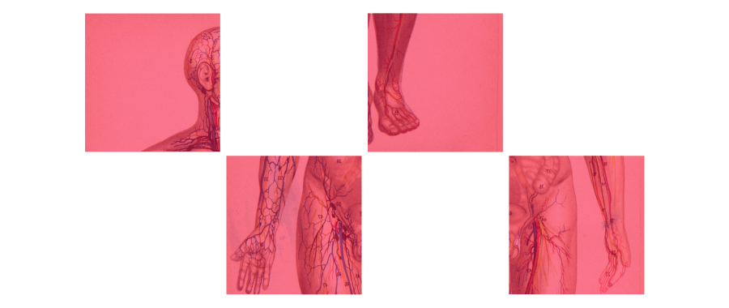

Source 01 - https://en.wikipedia.org/wiki/Partialism
Source 02 - https://www.tryquinn.com/blog/what-is-auralism
Source 03 - https://www.dazeddigital.com/beauty/article/58184/1/speaking-to-the-people-with-a-fetish-for-licking-eyeballs-oculolinctus-kink
Source 04 - https://www.cosmopolitan.com/sexopedia/
Source 05 - https://www.killingkittens.com/blog/hand-fetish-what-is-it/
Source 06 - https://www.refinery29.com/en-us/olfactophilia-sweat-smell-attraction
Source 07 - https://www.thestar.com/opinion/the-sexual-mystery-of-podophilia-or-foot-fetishism/article_a163819f-8043-50ba-b062-c7fb534e2d32.html
Source 08 - https://thedailyomnivore.net/2011/07/03/breast-fetishism/
Source 09 -https://curmudgeon-alley.com/word-of-the-day-mazophilia/
Source 10 - https://www.vice.com/en/article/dpwk37/its-time-to-talk-about-armpit-fetishes-918
Source 11 - https://www.menshealth.com/sex-women/a38443071/armpit-fetish/
Source 12 - https://www.businessinsider.com/guides/health/sex-relationships/foot-fetish
Source 13 - https://www.vice.com/en/article/epzpv4/navel-play-belly-button-fetish-sex
Source 14 - https://en.wikipedia.org/wiki/Navel_fetishism
Source 15 - https://drmarkgriffiths.wordpress.com/tag/knee-fetishism/
Source 16 - https://en.wikipedia.org/wiki/Olfactophilia
Source 17 - https://kinkopedia.wordpress.com/2010/01/10/kotw-paraphilias/